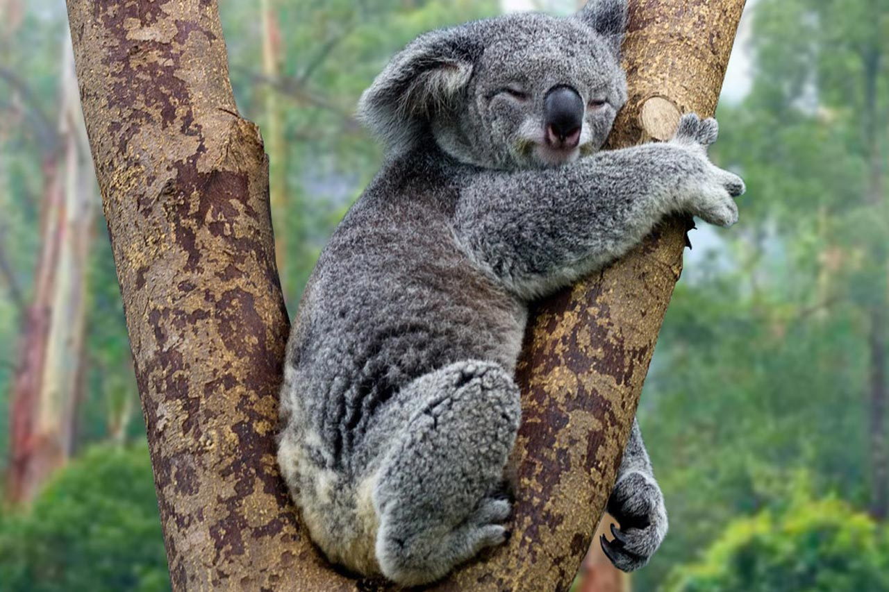
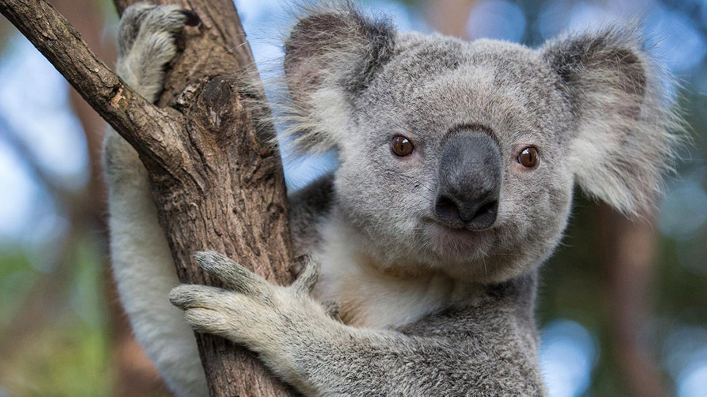

Home
-
Animals
Koala
General Facts
- Koalas live in the eucalyptus forests of southeastern and eastern Australia.
- Koalas can eat more than a pound of eucalyptus leaves a day. Eucalyptus is toxic, so the koala’s digestive system has to work hard to digest it, breaking down the toxins and extracting limited nutrients.
- Koalas sleep so much because they get very little energy from their diet. Tucked into forks or nooks in the trees, koalas may sleep for 18 to 22 hours
- Koalas usually don’t drink much water as they get most of their moisture from these leaves. Koalas can even store leaves in their cheek pouches for later.
- Koala numbers plummeted in the late 19th and early 20th century from hunting for their fur.
- While koalas are a national symbol of Australia’s unique wildlife, they can only be found in the wild on the southeast and eastern sides of Australia, along the coastlines of Queensland, New South Wales, South Australia and Victoria.
- Koalas aren't bears as many people are led to believe. They aren't even related to bears.
The koala is related to the kangaroo and the wombat. The koala is a marsupial mammal.
- Now there are only 2,000 to 8,000 koalas in the wild! Although not officially classified as endangered, the population of Australian koalas has dropped by 90% in less than a decade.
- The koala is very small when it's just born.
After 1 month the cub is 1 cm. long.
The koala weighs 15 to 30 pounds.
One cub is born at a time.
The koala cub stays in the mother's pouch for 5 months.
The koala cub is blind when it's born.
- Aboriginal names for the koala include Kaola, Koalo, Koolewang, Koobor, Colah, Coola and Cullawine.
Key Facts
| Common Name |
Koala |
| Scientific Name |
Phascolarctos cinereus |
| Type |
Mammals |
| Diet |
Herbivore |
| Avergae life span |
~20 years |
Pictures


Video
>